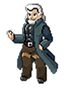
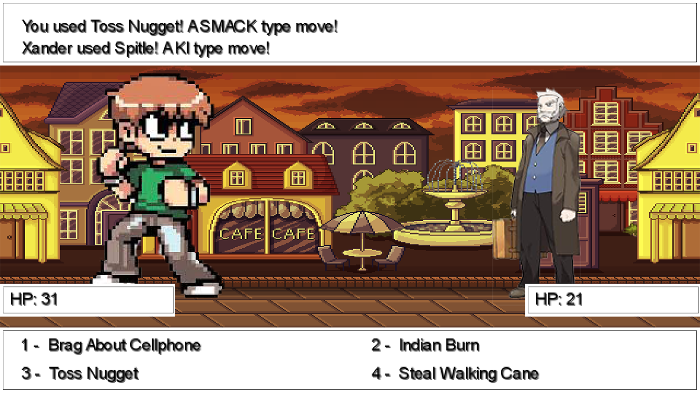

Game Instructions:
For you to have the best user experience we give you two possibilities of walking trough the city.
WASD KEYS or ARROW KEYS
And when you feel ready to face your opponent just press X when approaching them.
During the battle choose your attacks by pressing the keys 1 to 4. Choose wisely or else GAME OVER.
Don't lose your focus because you have to defeat the final boss. 
